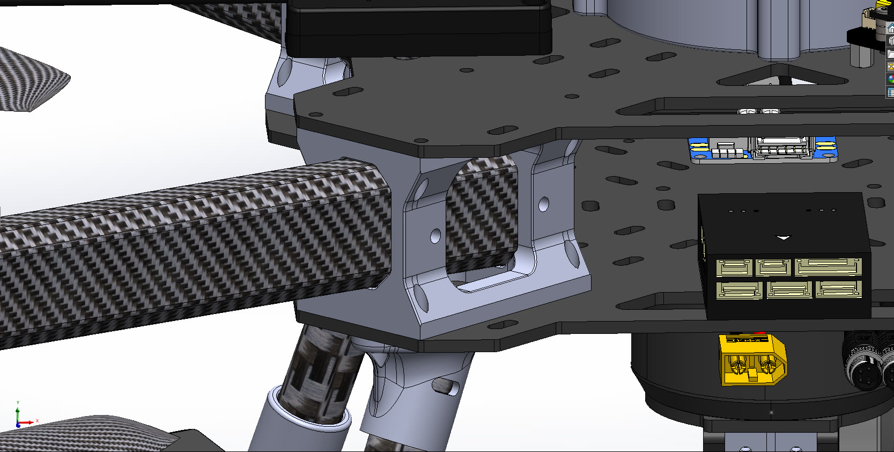

First-year Mechatronics Systems Engineering at SFU Surrey and a mechanical member of Team Astra, SFU's UAV design team. I like building things that move: drones, robots and anything with a motor and a sensor. Looking for a co-op placement.

Sheet 01: Project Nova, SolidWorks assembly. Projects without photos yet show a line diagram.